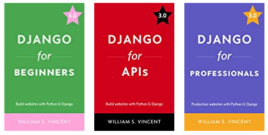
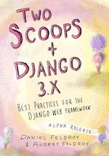
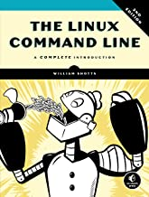
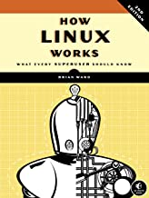
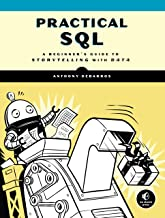

Django Resources
Django has been one of the most prominent Python web frameworks for almost 15 years now. Django is downloaded about 200,000 times each day, and powers millions of websites. You can use it for small projects where you’re the only user, or for projects that just serve the teams you work with. But it’s also powerful enough to serve some of the most popular sites on the internet such as Instagram, Pinterest, and Disqus.
You can use books to get started with Django, but once you learn the overall structure of Django projects and how to do common tasks, you’ll want to become familiar with the official documentation and some other online resources. Django has some of the best documentation of any open source project, and it’s well worth your time to become familiar with it. This section will help you find some good follow-up resources after working through the Learning Log project, and also familiarize you with resources you’re likely to use as long as you’re an active Django developer.
Note: Some of the resources mentioned in the General Python Resources have sections that are relevant to Django developers. I won’t repeat those resources here, but you should check them out as well.
- The Official Django Tutorial (The Polls Tutorial)
- Books and Print Resources
- Django for Beginners, Django for APIs, and Django for Professionals, by Will Vincent
- Django Crash Course, by Daniel Feldroy and Audrey Feldroy
- Two Scoops of Django 3.x: Best Practices for the Django Web Framework, by Daniel Feldroy and Audrey Feldroy
- The Linux Command Line (2nd Edition), by William Shotts
- How Linux Works (2nd Edition), by Brian Ward
- Practical SQL, by Anthony DeBarros
- Online Resources
- Podcasts
- Libraries and Packages
- Email Lists
The Official Django Tutorial (The Polls Tutorial)
The Django documentation includes an in-depth tutorial that’s really worth going through. In fact, I highly recommend it as your next step after completing the Learning Log project. You’ll be familiar with much of what you see, but you’ll also learn more details about many aspects of Django, and see some new features as well. For example you’ll see how to test your Django apps, which is absolutely critical for many webapp-based projects. The tutorial also has links to the technical documentation throughout, which is a great way to start exploring the technical documentation.
Almost everyone in the Django community has worked through the Polls tutorial at some point, and working through it gives you common ground in your early communication with other Django developers.
You can start with an overview of all the parts of the tutorial, or you can straight to part 1. (When it tells you to install Django, it’s a good idea to set up a virtual environment for the tutorial project just like we did in the Learning Log project. I would call it pt_env, for “polls tutorial environment.” Also, when you’ve finished the tutorial you might try pushing the project to Heroku.)
Books and Print Resources
Django for Beginners, Django for APIs, and Django for Professionals, by Will Vincent
the book’s author hasn’t read any of these books, but I’ve read many of Will Vincent’s articles about specific topics in Django. Every article has been accurate and up to date, with clear instructions and explanations. the book’s author has no doubt his books are of the same quality. Will is also a board member of the Django Software Foundation, and he co-hosts the Django Chat podcast and co-curates the weekly Django News newsletter.
Django for Beginners walks you through building a series of increasingly complex websites using Django. Django for APIs shows you how to build web apps where Django is used for the backend and a JavaScript library (React in this case) is used for the frontend. Django for Professionals takes you from the tutorial-focused world to the real world by building a professional-quality project complete with support for payments through Stripe.
If you’re interested in any of these books, you can see more about them and buy them at learndjango.com. There’s a discount if you buy the three books as a bundle.

Django Crash Course, by Daniel Feldroy and Audrey Feldroy
Daniel and Audrey Feldroy are the authors of Two Scoops of Django, which focuses on more advanced aspects of Django. Django Crash Course (which has no affiliation with Python Crash Course) is their foray into introductory Django topics. Django Crash Course is based on materials that Daniel and Audrey have used for years in corporate training programs. They have repackaged their material to be accessible to anyone already familiar with Python, but not necessarily having a background in Django. They are planning a series of extensions to the book which will cover specific topics that build on the material in this book.
Django Crash Course is available now as an e-book. You can preorder a paperback, coil-bound, or hardbound copy as well. All of these versions are available here.
Two Scoops of Django 3.x: Best Practices for the Django Web Framework, by Daniel Feldroy and Audrey Feldroy
Two Scoops of Django is not a good resource to read immediately after Python Crash Course. It is, however, a really good book to be aware of as you gain more experience with Django. TSD is aimed at people who have built a number of Django projects, and are looking to better understand how to manage all the working parts of a significant webapp project built in Django. The recommendations in this book come from years of experiencing building and maintaining many Django-based sites of various sizes, and years of training professional Django developers.
You can see a full table of contents and order an electronic version of the book here. A print version of the book should be available soon.

The Linux Command Line (2nd Edition), by William Shotts
Most Django projects are deployed to Linux-based servers, and if you’re going to continue working with Django it will certainly help to be familiar with the Linux command line. Even if you deploy to a platform like Heroku that tries to automate most of the deployment work for you, you’ll still need to use the command line at times to do things like creating a superuser on your live site, or run migrations. Even if you use Heroku’s admin panel for some of these tasks, it’s inevitable that at some point you’ll need to use a command line for troubleshooting, or to run specific commands that don’t have a browser-based GUI. The Linux Command Line is a great resource, and you can either read it straight through or skim it and focus on the sections that seem most relevant to your work.
If you buy the book direct from No Starch Press you get a free e-book with the printed copy. You can also buy it from Barnes and Noble or Amazon. You can see more information about using Linux at the author’s site, linuxcommand.org, where you can also download a free PDF version of the book.

How Linux Works (2nd Edition), by Brian Ward
There’s some overlap between this and The Linux Command Line, but if you enjoy learning about Linux this is another great book to read straight through, or skim and focus on the parts most relevant to your work. How Linux Works has been a mainstay in the Linux world for many years, and if you’re continuing in web development it’s well worth your time.
If you buy the book direct from No Starch Press you get a free e-book with the printed copy. You can also buy it from Barnes and Noble or Amazon.

Practical SQL, by Anthony DeBarros
Django’s Object Relational Mapper, or ORM as it’s commonly referred to, is a tool that allows you to query for data from a database by writing pure Python. Django converts this to Structured Query Language, or SQL as it’s commonly called. The ORM is an amazing tool that’s made working with databases much easier over the years. But the farther you go with Django, the more an understanding of SQL will help you. It will help you write more efficient queries, even if you only never actually write raw SQL yourself. Practical SQL uses Postgres to teach you SQL, and Postgres is one of the most common databases that Django developers use.
If you buy the book direct from No Starch Press you get a free e-book with the printed copy. You can also buy it from Barnes and Noble or Amazon. The code, data, and other online resources are available at the author’s GitHub page.

Online Resources
Official Django Documentation
Django’s official documentation is some of the clearest technical documentation you’ll find for an open source project. It’s well-organized and has clear and accurate writing throughout. Here’s a brief list of sections to start looking at:
- The Django home page is at djangoproject.com. Here’s you’ll find some highlights of the framework, and a bunch of information for Django developers of all levels.
- The download page tells you how to install the latest official version. But it also lets you download development versions of upcoming releases, so you can see whether your code will continue to work on upcoming versions. You can also see a chart of how long each version will receive updates.
- The main page for the technical documentation is at docs.djangoproject.com. Here you’ll find installation instructions, a lengthy tutorial, places to get help, a guide to the overall documentation, and numerous ways to start exploring different areas of the documentation.
- There’s a community page that links to an active forum, a couple mailing lists, an IRC channel, and more.
- The Django code is in a GitHub repository. Django is a large project so it will probably take you a while to start understanding how the codebase works, but it’s a great example of a well-architected larger project.
- There’s an issue tracker where people can report and work on bugs and other issues with the framework itself.
- The about page covers the Django Software Foundation, and how you can get involved in supporting development and maintenance of Django.
If you’re going to continue working with Django, you’ll almost certainly be spending time reading through the official documentation. If you haven’t done so already, take a quick look now so it’s familiar when you need it.
Learn Django
Learn Django is Will Vincent’s site, which has a variety of Django resources including the books described above. Will recently reorganized his online resources at learndjango.com. The site highlights his books, but there’s also a collection of excellent tutorials about a variety of specific Django topics.
Simple is Better Than Complex
Vitor Freitas started a blog a while back about Python and Django, and I’ve found his articles and tutorials quite helpful as I’ve worked on numerous projects. It’s worth checking out, and if you see one of his tutorials in your search results, it’s probably a good resource to use.
r/django
The r/django subreddit has over 70k members, so it’s a fairly active community. If you have questions as you work through your own projects, this is a pretty reasonable place to ask for help.
Podcasts
Django Chat
Django Chat is hosted by Will Vincent and Carlton Gibson. Will is the author of several Django books. Carlton is a Django fellow who helps maintain the Django framework, and maintains several prominent Django libraries as well. Each week they either interview people who use Django for a variety of purposes, or discuss notable aspects of Django themselves. I’ve been listening for several months, and I feel much more connected to the Django community and have a better understanding of Django internals and best practices as well. There are 66 episodes as of this writing.
You can listen at djangochat.com, and you can listen on Spotify and Apple Podcasts as well.
Libraries and Packages
We used one package in the Learning Log project, django-bootstrap4. There are many third-party libraries that are really helpful if you’re going to continue working with Django. Here’s a short list to help you start exploring the Django package ecosystem. You can find a more complete list of third party packages and other resources at Awesome Django, a curated GitHub repository of Django resources.
django-debug-toolbar
Django Debug Toolbar is really helpful for development work. It’s an app that puts a sidebar on your project, giving you a range of useful information during development. There are panels that tell you how long your request took to process, what settings are in effect, information about the request object, queries that were executed, and much more. Using the toolbar will give you a lot of insight into everything that happens behind the scenes to render a page in your project.
The online documentation is at django-debug-toolbar.readthedocs.io, and the code is here.
django-allauth
In Learning Log, we just had users provide a username and create a password. In real world projects you’ll probably want to work with emails, and third-party authentication workflows. The django-allauth package takes care of much of this for you.
The online documentation is at django-allauth.readthedocs.io, and the code is here.
django-extensions
The django-extensions package provides a number of resources that are helpful in developing your Django projects. For example, there is a shell_plus extension that makes the Django much easier to work with by automatically importing all of your models and other resources.
The online documentation is here, and the code is here.
Django REST framework
Many sites use an API at some point to provide access to data. This can be used within the project itself, for example to feed data to a JavaScript framework for a responsive frontend, or to provide a way for users to query for data programmatically. Django REST framework, or DRF for short, is the go-to package for creating and managing APIs within Django projects.
The online documentation is at django-rest-framework.org, and the code is here.
django-fakery and Faker
When you’re developing a project, it’s really helpful to populate your project with sample data. In Learning Log we did this by making a couple topics, and typing in a couple entries. It’s impossible to generate large amounts of sample data this way, and if you’ve entered all of your sample data by hand you’ll be really reluctant to rebuild your database, even if that would help your development process.
Faker is a Python project that makes it easier to generate fake data such as words, sentences, paragraphs, names, and more. django-fakery is built on top of Faker, and it tries to automate the task of assigning values to all the fields in your models when generating sample data. These packages can be really helpful in making a meaningful amount of sample data for your development work.
The online documentation for django-fakery is at django-fakery.readthedocs.io, and the code is here. The online documentation for Faker is at faker.readthedocs.io, and the code is here.
Email Lists
Django News
Django News is a weekly newsletter featuring news, articles, projects, and more. It’s curated by Jeff Triplett and Will Vincent. You can see the latest issue and sign up for weekly emails at django-news.com.